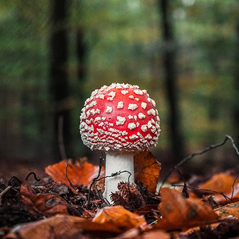
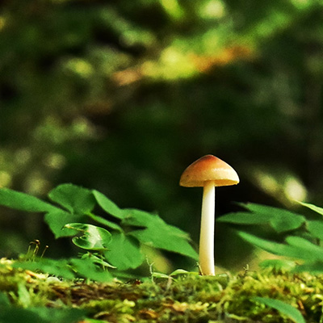
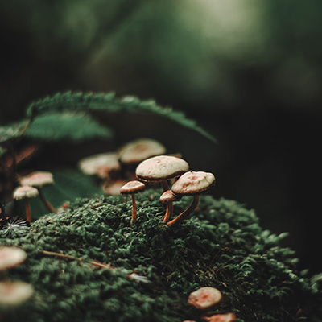
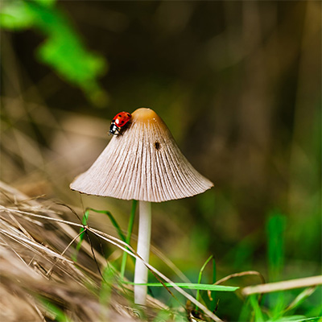

Mushroom Varieties




“A mycelial network is a map of a fungus’s recent history and is a
helpful reminder that all life-forms are in fact processes not
things. The “you” of five years ago was made from different stuff
than the “you” of today. Nature is an event that never stops. As
William Bateson, who coined the word genetics, observed, “We
commonly think of animals and plants as matter, but they are really
systems through which matter is continually passing.”
Want some magic in your inbox?
Sign up for our daily newsletter. Full of mushroom magic and interesting facts.